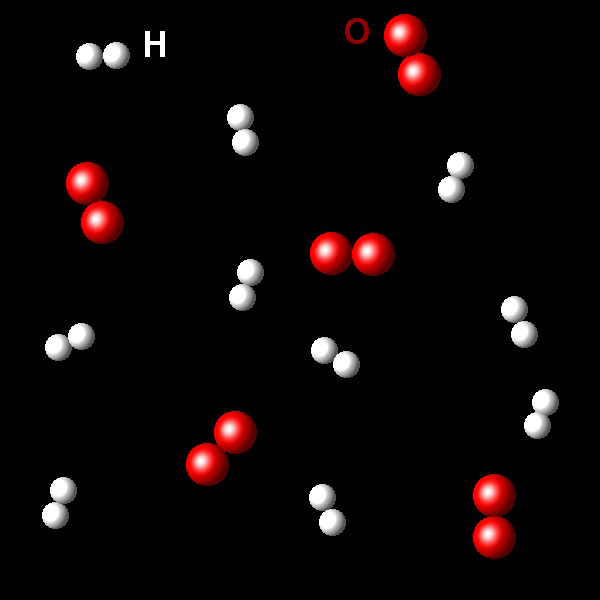

Reacción 2a
La siguiente figura muestra un fragmento de una muestra que contiene moléculas de oxígeno, O2, esferas rojas y moléculas de hidrógeno, H2, esferas blancas.
|  |
Si esta mezcla se hace reaccionar para formar agua, indicad cuál será el reactivo limitante de la reacción.
Correcto. La estequiometría de la reacción es 2 Hidrógenos/1 Oxígeno.
En esta muestra hay 10 moléculas de hidrógeno y 6 de oxígeno. Hidrógeno es el reactivo limitante.
|
|
Incorrecto. La estequiometría de la reacción es 2 Hidrógenos/1 Oxígeno.
En esta muestra hay más de la mitad de moléculas de oxígeno que de hidrógeno. 10/6
|
|
Incorrecto. La mezcla está en proporciones
molares 10/6, cuando la relación estequiométrica es 10/5=2/1. Hay un defecto de hidrógeno.
|